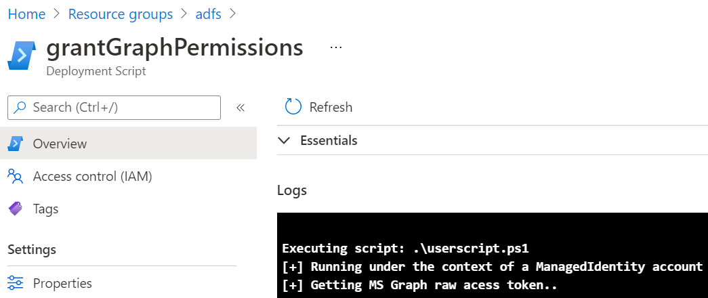
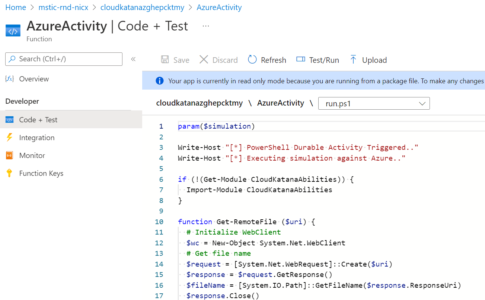

Azure Resource Manager Template
Contents
Azure Resource Manager Template¶
Create Azure Function Application Name¶
Note
The name of the Cloud Katana Azure function application needs to be unique because it is of Global scope across Azure resources. Therefore, use the following commands to get a random name with cloudkatana as a prefix.
$functionAppName = (-join ('cloudkatana',-join ((65..90) + (97..122) | Get-Random -Count 10 | % {[char]$_}))).ToLower()
Create a User Assigned Managed Identity¶
Besides using Azure Functions to run simulations, Cloud Katana leverages the following resources for additional capabilities:
Azure AD application (Server): Enables authentication and authorization features via Azure AD.Azure AD application (Client): A native application used to interact with Cloud Katana’s serverless API. This is part of the authentication and authorization process.User-assigned managed identity: Facilitates the granular access control to other Azure AD protected resources. Permissions required to execute each simulation task need to be granted to the Cloud Katana’s managed identity.
The registration of new Azure AD applications and permission grants are done via custom scripts in the ARM template. These custom scripts need to be executed under the security context of an identity with the right permissions to do so. Rather than passing credentials to the ARM template, we use a user-assigned managed identity.
Note
To create a user-assigned managed identity, your account needs the Managed Identity Contributor role.
You can use the Cloud Katana Utils PowerShell module, available at the root of the project folder, to create a user-assigned managed identity.
cd Cloud-Katana
Import-Module .\CloudKatanaUtils.psm1 -verbose
Run the following PowerShell commands to create a new managed identity:
$identityName = 'CKDeploymentIdentity'
$resourceGroup = '<RESOURCE-GROUP-NAME>'
$identity = New-ManagedIdentity -Name $identityName -ResourceGroup $resourceGroup -verbose
Grant Permissions to Managed Identity¶
Once the managed identity is created, we need to grant all the required permissions to register new Azure AD applications and grant permissions to the deployment managed identity. The following permissions must be granted:
Application.ReadWrite.All: Allows the calling app to create, and manage (read, update, update application secrets and delete) applications and service principals without a signed-in user.AppRoleAssignment.ReadWrite.All: Allows the app to manage permission grants for application permissions to any API (including Microsoft Graph) and application assignments for any app, without a signed-in user.DelegatedPermissionGrant.ReadWrite.All: Allows the app to grant or revoke any delegated permission for any API (including Microsoft Graph), without a signed-in user.User.Read.All: Allows the app to read the full set of profile properties, group membership, reports and managers of other users in your organization, without a signed-in user.
Reference: https://docs.microsoft.com/en-us/graph/permissions-reference#application-permissions-4
You can use another function from the Cloud Katana PowerShell module to grant permissions to the deployment managed identity.
Grant-GraphPermissions -SvcPrincipalId $identity.principalId -PermissionsList @('Application.ReadWrite.All','AppRoleAssignment.ReadWrite.All','DelegatedPermissionGrant.ReadWrite.All','User.Read.All') -PermissionsType application -verbose
Deploy ARM Template¶
Deploy Cloud Katana to Azure with the azuredeploy.json ARM template available at the root of the project’s folder. You can run the template with Azure CLI or a Deploy button (One-click deployment).
Azure CLI¶
$resourceGroup = '<RESOURCE-GROUP-NAME>'
$functionAppName = 'FUNCTION-APP-NAME'
$identityId = $identity.id
$assignAppRoleToUser = 'USER@DOMAIN.COM'
az deployment group create --template-file azuredeploy.json --resource-group $resourceGroup --parameters functionAppName=$functionAppName identityId=$identityId assignAppRoleToUser=$assignAppRoleToUser
Deploy Button¶
You can also click on the button Deploy below and provide the required parameter values used in the previous Azure CLI deployment section.
Monitor Deployment¶
Go to https://portal.azure.com > <RESOURCE-GROUP-NAME> > Deployments to monitor the deployment of Cloud Katana’s resources:

If you go back to your resource group, you will see everything that is being created:

You can click, for example, on one of the deployment scripts artifacts and inspect the logs to see what the scripts is doing as shown below:

Finally, when the Cloud Katana Azure function is deployed, you can go back to your group resources and click on the Function App resource. Then, you can click on Functions and you will be able to explore all the Azure functions associated with the Cloud Katana serverless API.

Let’s click on the Activity Function named Azure. This one is used to execute actions in Azure. Next, click on Code +Test to look at the code behind the activity function.

That’s it!